2026
WHITE DINNER – Dîner en blanc
🕗 20:00 Uhr · mit LIVE-Musik von Jaz Sings!
MITBRINGEN:
✓ Speis' & Trank · ✓ Tisch & Stuhl · ✓ Geschirr & Gläser
✓ Weiße Tischdecke · ✓ Weiße Gewandung!
Bierbänke stellen wir für euch auf –
aber ob sie für alle reichen? Vielleicht! ♡
Lasst uns gemeinsam einen unvergesslichen Sommerabend in Weiß genießen!
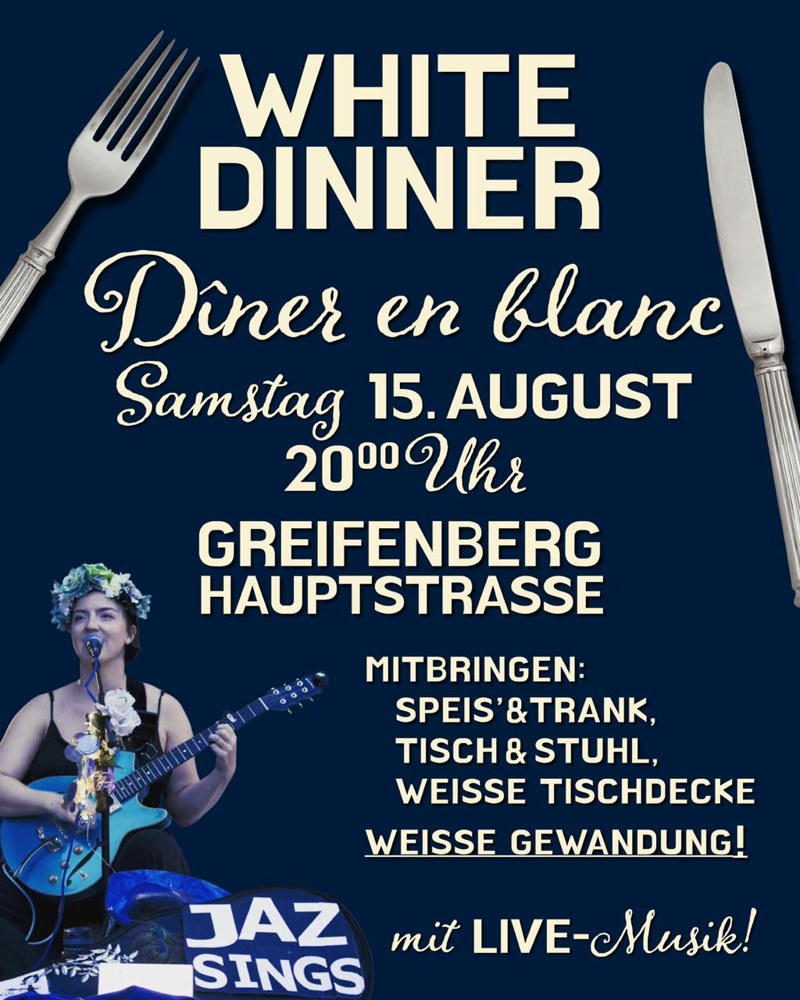
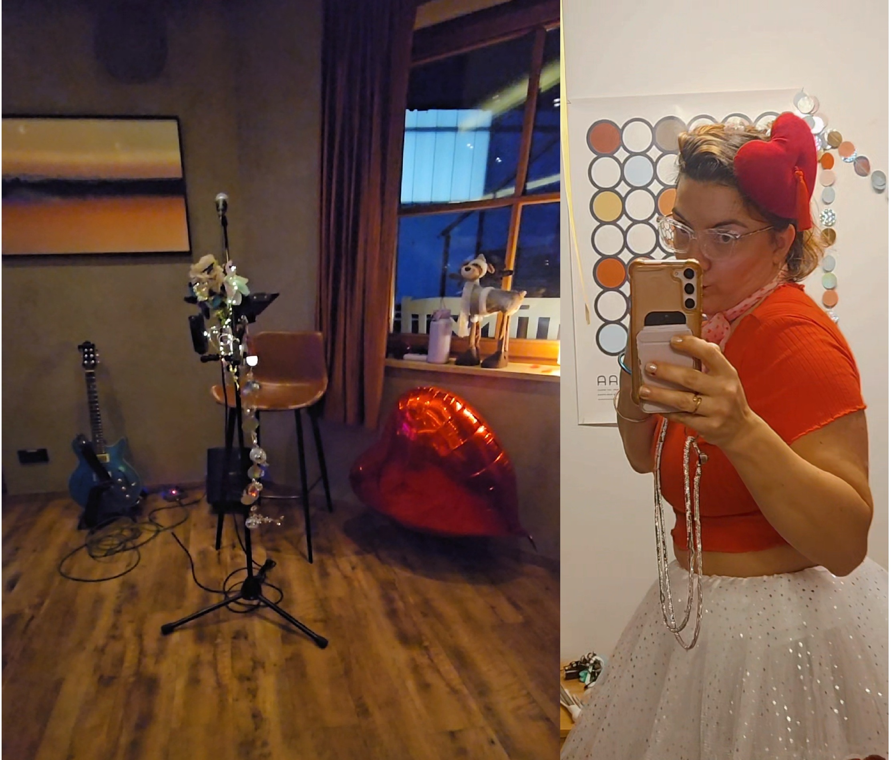
2026
Jaz Sings im Restaurant Sportivo zum Valentinstagsdinner
Liebe geht durch den Magen 🍕 Ein romantischer Valentinsabend mit Live-Musik von Jaz Sings – jetzt reservieren und vorbeikommen, lauschen und genießen!
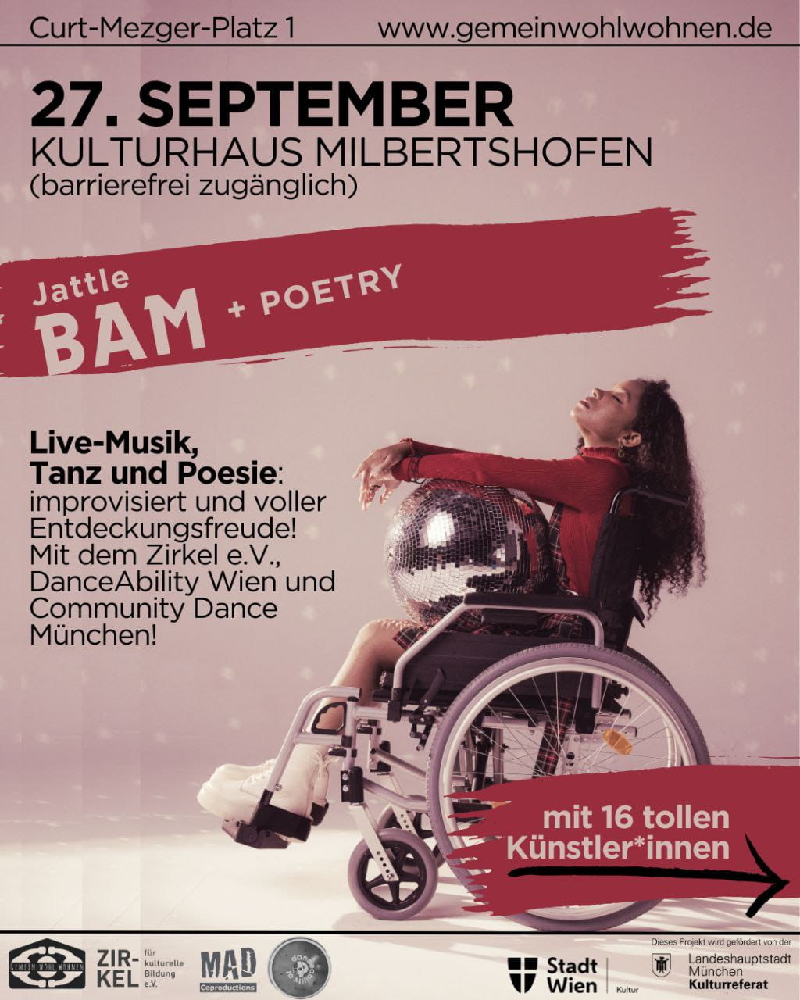
2025
Jaz Sings auf dem Jattlebam + Poetry
Das gefeierte Wiener Format kommt erstmals nach München: Zwei mixed-abled Teams improvisieren mit Tanz, Musik & Poesie – miteinander, gegeneinander und im Dialog mit dem Publikum. DanceAbility, Live-Musik und gesprochene Poesie verschmelzen zu einer unvergesslichen Performance. Jaz Sings ist als Musikerin dabei.
Eintritt frei – Spenden willkommen!
Eintritt frei – Spenden willkommen!


2025
Jaz Sings zum Happy Festival im Autohaus Moser
Ein tolles Fest zur Neueröffnung – für die ganze Familie!
· Buffet · Grill · Hüpfburg · Gewinnspiel
· Buffet · Grill · Hüpfburg · Gewinnspiel
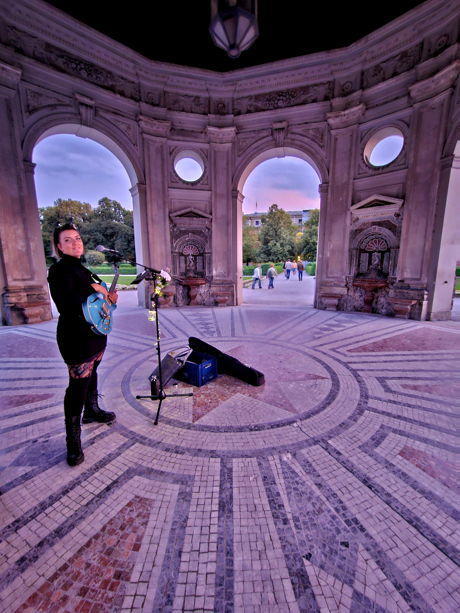
2025
Jaz Sings im Dianatempel
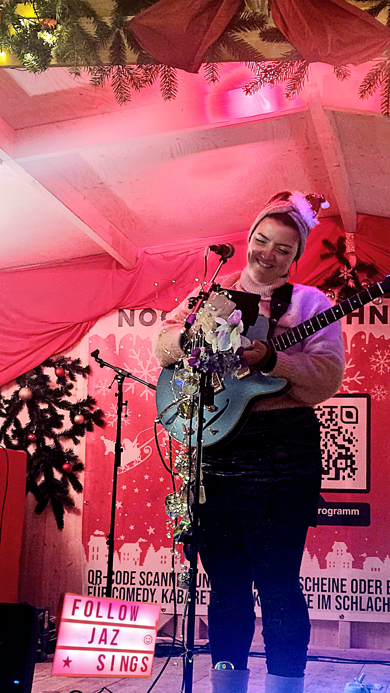
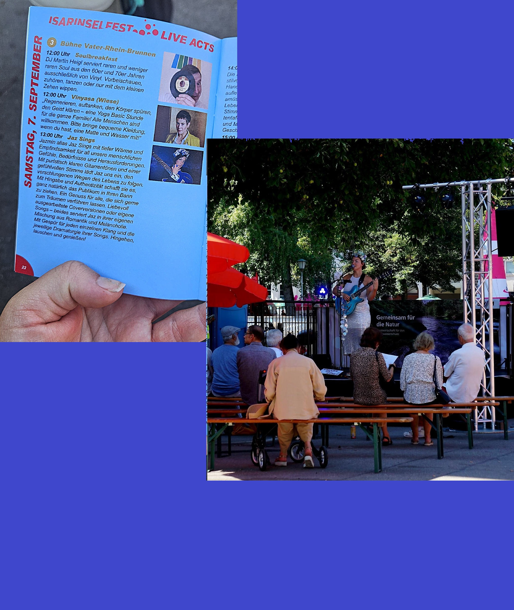
2024
Jaz Sings auf dem Isarinselfest
Das Isarinselfest ist Münchens großes, soziales Stadtfest an der Isar – getragen von AWO, ASB und ehrenamtlichen Helfer*innen. Musik, Kultur, Kabarett und ein besonderes Gemeinschaftsgefühl für alle Münchner*innen. Der Eintritt ist frei! Jaz Sings bringt ihre Musik auf die Bühne.
2024
Jaz Sings auf dem Bardentreffen in Nürnberg
Drei Tage wunderbarste Musik auf NEUN verschiedenen Bühnen – quer durch die träumerische Altstadt Nürnbergs. Das größte Musikfestival Deutschlands bei freiem Eintritt! Ich freue mich auf Euch!

2023
Jaz Sings im Dianatempel
Catch me this Saturday in Munich Hofgarten!
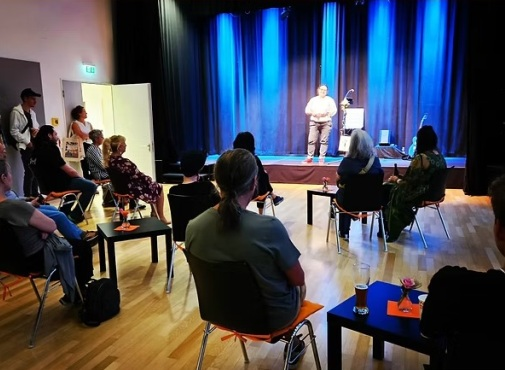
2023
Jaz Sings auf der Vernissage SIEBDRUCK – Junge Arbeit · Stadtteilkultur 2411 e.V.
Die Auszubildenden der Siebdruckwerkstatt stellen vor: Exponate und Drucktechniken, phantasievolle Serigraphien, Entwürfe, Arbeitsschritte, Handwerkszeug und fertige Produkte. Auch eine Live-Druckvorführung ist geplant. Während der Vernissage können Exponate aus der hauseigenen Produktpalette erworben werden.
Und dazu live – Der Sound von Jaz.
Der Eintritt ist frei.
Und dazu live – Der Sound von Jaz.
Der Eintritt ist frei.
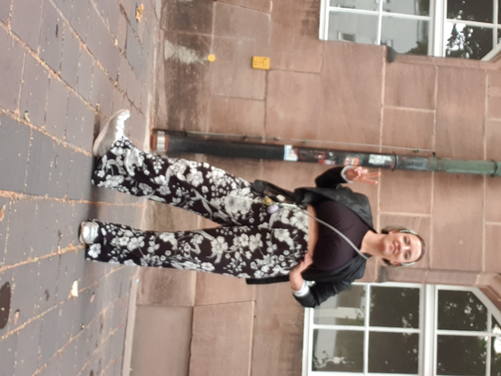
2023
Jaz Sings auf dem Bardentreffen in Nürnberg
DAS BARDENTREFFEN – 3 Tage Musik auf 9 Hauptbühnen und unzähligen Straßenkünstlern. Das größte Musikfestival Deutschlands bei freiem Eintritt! See you there!
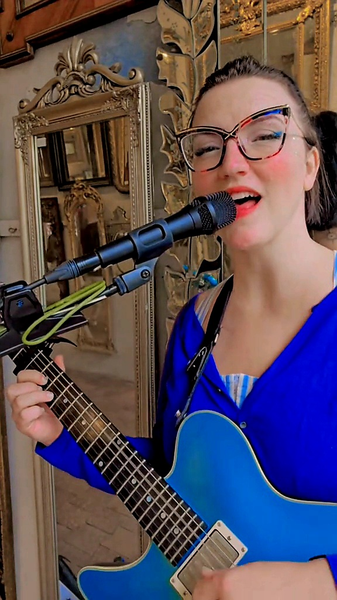
2023
Jaz Sings in der KunstOase
Komm vorbei zum Hofkonzert und zum Bestaunen der 320 qm Antiquitäten und Erstöbern der Schmuckstückchen. In dem wahrscheinlich schönsten Antiquitätenladen in München – die Decke besteht nur aus einem Lampenteppich und alte Gemälde brechen sich in tausenden Spiegeln!
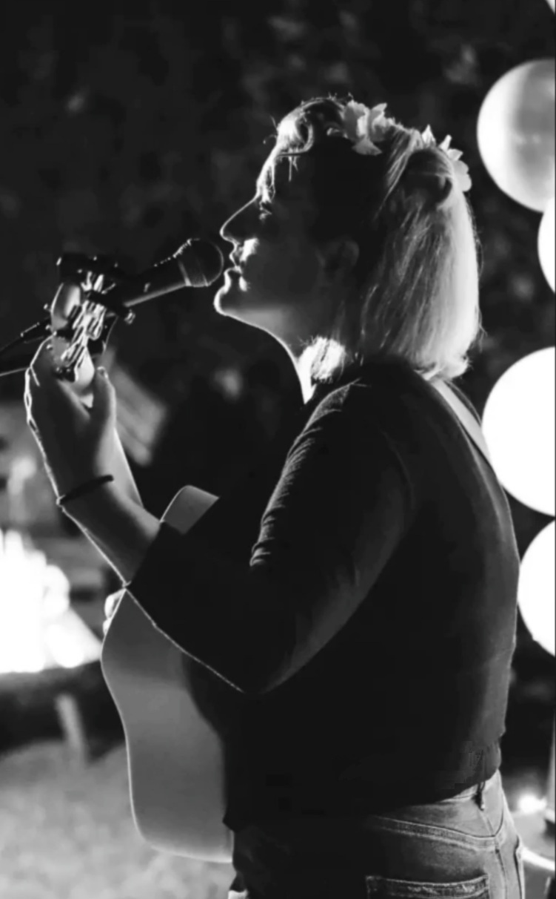
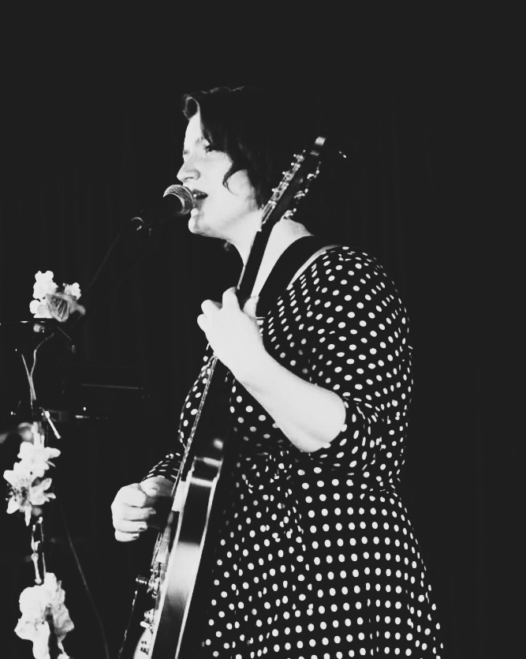
2023
Jaz Sings im Eine-Welt-Haus
Liebe Menschen, liebe ZIRKEL-Freundinnen und Freunde, wir laden herzlich ein: Am 5. Februar 2023 wollen wir ZUSAMMENKOMMEN und feiern im Saal des Eine-Welt-Hauses.
Programm:
15 Uhr: GUTE GEFÜHLE – Ein Clowns-Theater-Stück über den Umgang mit Gefühlen. Anschließend Raum für Fragen und Gefühle-Spiele zum Mitmachen.
17 Uhr: Vorstellung ZIRKEL e.V. – Wie wir wirken und agieren. Methoden, Inhalte und Visionen. Das neue Projekt ZUSAMMENKOMMEN.
18 Uhr: Essen – Trinken – Feiern. Mit Musik von Jaz Sings und Tresmundo.
Bis bald, Micaela Czisch, Beatrix Ehrensperger und das ZIRKEL-Team
Programm:
15 Uhr: GUTE GEFÜHLE – Ein Clowns-Theater-Stück über den Umgang mit Gefühlen. Anschließend Raum für Fragen und Gefühle-Spiele zum Mitmachen.
17 Uhr: Vorstellung ZIRKEL e.V. – Wie wir wirken und agieren. Methoden, Inhalte und Visionen. Das neue Projekt ZUSAMMENKOMMEN.
18 Uhr: Essen – Trinken – Feiern. Mit Musik von Jaz Sings und Tresmundo.
Bis bald, Micaela Czisch, Beatrix Ehrensperger und das ZIRKEL-Team

2022
Jaz Sings im Luitpoldpark
Jaz Sings & Linda's Melodies – Musik für Träumer und Geniesserinnen. Sonntags-ZIRKEL im Luitpoldpark vom Verein ZIRKEL für kulturelle Bildung e.V.
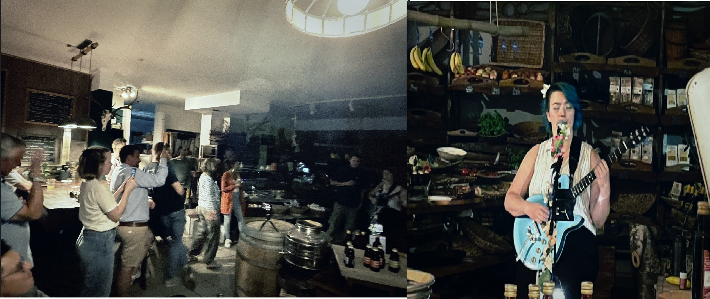
2022
Jaz Sings im Feinkostladen Kraut und Rüben in Deisenhofen
Ein kleines, gemütliches Geschäft. Der Inhaber ist sehr freundlich und legt bei der Auswahl seiner Produkte Wert darauf, dass sie regional sind oder von kleinen, aber feinen Herstellern. Am Nachmittag, wenn die Sonne scheint, kann man vor dem Laden wunderbar in der Sonne sitzen und gemütlich seinen Kaffee schlürfen.
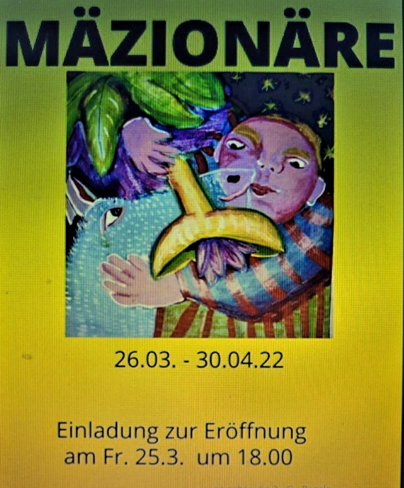
2022
Jaz Sings auf der Mäzionäre Vernissage
Ich freue mich über die Einladung, die Vernissage von Mäzionäre musikalisch zu begleiten. Kommt vorbei und feiert mit uns den Frühlingsanfang! Eine Kooperation der Künstlerin Christine Steiner und der Boutique Viva Maria von Laura Bonazzi. Hope to see you there – Love, Jaz 🌿
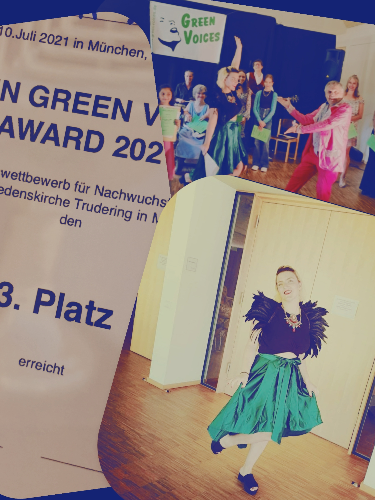
2021
Joy Green Voices Award 2021
Yeah – ich habe den dritten Platz bei den Joy GREEN VOICES AWARD 2021 belegt! Ich war die einzige die mit Instrument auftrat – dafür hatte ich das schönste Outfit 😜 Danke dass ich dabei sein durfte! Es hat viel Spaß gemacht und die Band war super!